Sistema de Trazabilidad y Control Documental de Actas Ambientales
Municipalidad de Heredia — Gestión Ambiental
Versión del prototipo: 0.1.0-DEMO
Documento de apoyo para presentación ante el departamento de Tecnología.
El sistema es una aplicación monolítica (Spring Boot) que centraliza metadatos, estados documentales, historial auditado y documentos adjuntos de las actas ambientales. No reemplaza Survey123, ArcGIS ni Outlook; los complementa como capa de trazabilidad y control.
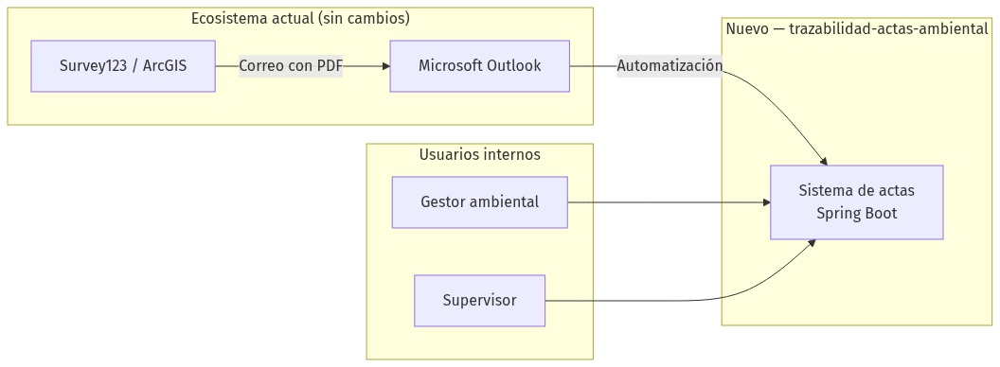
| Principio | Descripción |
|---|---|
| Complementar, no reemplazar | Survey123 sigue en campo; Outlook sigue recibiendo correos. |
| Bajo costo | Stack open source: Java 17, Spring Boot, PostgreSQL, Liquibase. |
| Evolución por fases | Registro manual → API → firma/nube automática → SIG. |
| API-first para integración | Power Automate y futuros sistemas se conectan vía REST JSON. |
| Auditoría | Cada cambio de estado queda en historial_estados. |
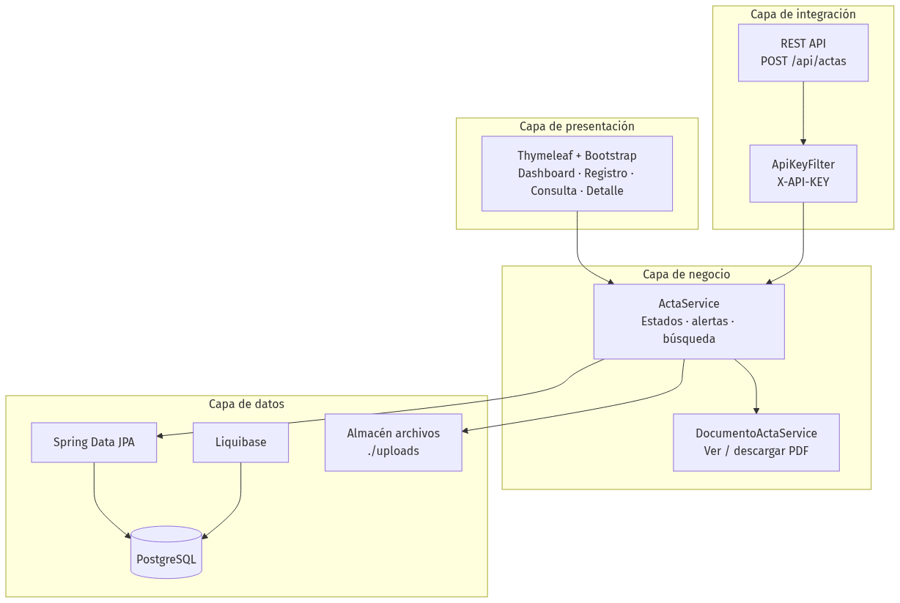
| Capa | Responsabilidad | Ubicación en código |
|---|---|---|
| Presentación | Pantallas web para gestores y supervisores | web/, templates/ |
| Integración | API REST para Power Automate y sistemas externos | api/, config/ApiKeyFilter |
| Negocio | Reglas de flujo, alertas, historial, documentos | service/ |
| Datos | Persistencia y migraciones de esquema | repository/, model/, db/changelog/ |
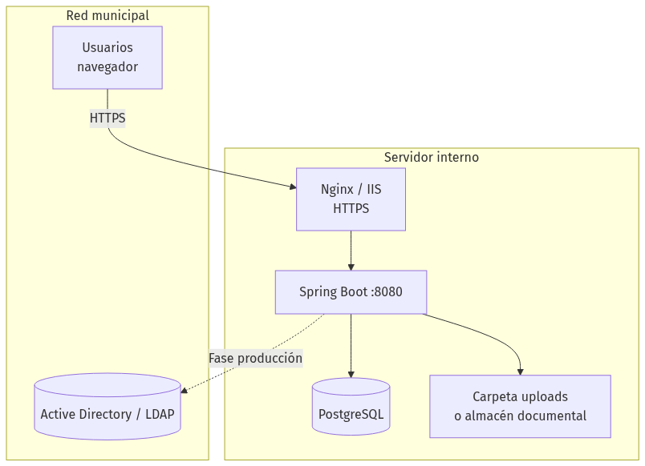
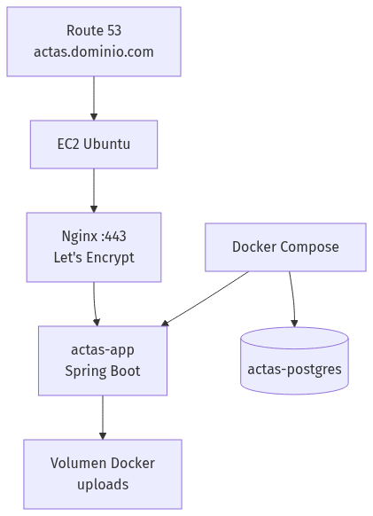
| Componente | Tecnología | Notas |
|---|---|---|
| Aplicación | Spring Boot 3.2.5 (JAR embebido) | Perfiles: demo, postgres, docker |
| Base de datos | PostgreSQL 16 | Esquema versionado con Liquibase |
| Archivos | Disco local ./uploads |
PDF/Word; ruta en BD (ruta_documento) |
| Proxy / TLS | Nginx + Certbot | Guía: docs/DESPLIEGUE-AWS.md |
| Contenedores | Docker Compose | docker-compose.yml |
| Capa | Tecnología |
|---|---|
| Lenguaje | Java 17 |
| Framework | Spring Boot 3.2.5 |
| Web | Thymeleaf, Bootstrap 5, Chart.js |
| API | REST JSON, Jakarta Validation |
| Persistencia | Spring Data JPA, Hibernate |
| BD | PostgreSQL (prod) / H2 (demo) |
| Migraciones | Liquibase |
| Build | Maven |
| Automatización externa | Microsoft Power Automate |
| SIG / campo | Esri Survey123, ArcGIS |
Cada transición genera un registro en historial_estados (quién, cuándo, observación).
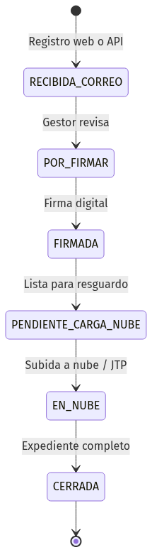
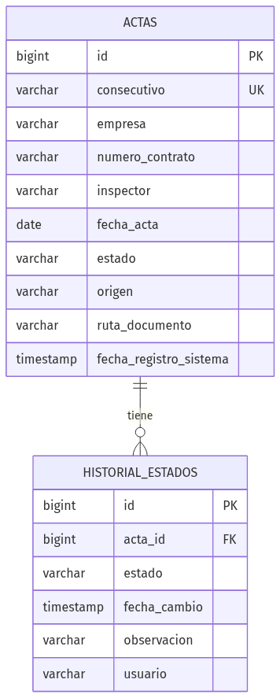
Roadmap propuesto en fases incrementales, validado con el departamento de Tecnología en cada etapa.
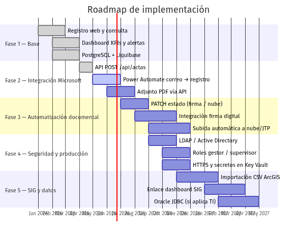
Las fechas son orientativas para la presentación; el calendario real lo define Tecnología según prioridades y recursos.
| Fase | Objetivo | Entregables | Estado |
|---|---|---|---|
| 1 | Trazabilidad manual centralizada | Web (dashboard, registro, consulta, detalle), BD, adjuntos, historial | Implementado |
| 2 | Automatizar registro desde Outlook | POST /api/actas, flujo Power Automate, documentación API |
Parcial (API lista; flujo PA pendiente TI) |
| 3 | Reducir trabajo manual (firma y nube) | PATCH estado, conector firma digital, subida SharePoint/JTP |
Propuesto |
| 4 | Pasar a producción segura | LDAP/AD, roles, HTTPS obligatorio, rotación de secretos | Propuesto |
| 5 | Integración SIG y alineación TI | Import ArcGIS, enlace SIG, migración Oracle si aplica | Propuesto |
| Ítem | Descripción |
|---|---|
| Registro de actas | Formulario web con adjunto PDF/Word |
| Consulta | Filtros por empresa, contrato, consecutivo, inspector, estado, fechas |
| Dashboard | KPIs, gráficos (estado, tipo, gestor), alertas de pendientes |
| Detalle | Cambio de estado, historial, ver/descargar documento |
| Persistencia | PostgreSQL + Liquibase; empresa y contrato opcionales |
| Demo | Perfil H2 en memoria para demostraciones sin BD |
| Ítem | Descripción | Dependencia TI |
|---|---|---|
| Power Automate | Trigger: correo nuevo en carpeta Actas → POST /api/actas |
Licencia M365, cuenta de servicio |
| Mapeo de campos | Extraer consecutivo, empresa, contrato del cuerpo del correo Survey123 | Plantilla de correo actual |
| API key segura | APP_API_KEY en Azure Key Vault o gestor de secretos |
Política de secretos municipal |
| Adjunto en API | Extender API para recibir PDF desde el flujo (multipart) | Desarrollo + prueba de flujo |
| Paso manual actual | Automatización propuesta |
|---|---|
| Descargar PDF del correo | Power Automate guarda adjunto o API multipart |
| Carpetas locales | Documento en servidor; vista en navegador |
| Firma digital externa | Flujo envía a proveedor de firma → PATCH estado FIRMADA |
| Subida manual a nube | Power Automate o servicio sube a SharePoint/JTP → PATCH estado EN_NUBE |
| Renombrar archivo "SUBIDA" | Estado EN_NUBE en BD + historial |
| Control | Demo actual | Producción |
|---|---|---|
| Login web | Sin autenticación | LDAP / Active Directory |
| Roles | No implementados | Gestor, supervisor, solo lectura |
| API | X-API-KEY |
OAuth2 / mTLS + Key Vault |
| Transporte | HTTP (local) | HTTPS obligatorio |
| Documentos | Acceso por URL | Permisos por rol |
| Secretos | Valores demo en config | Variables de entorno / Key Vault |
| Ítem | Descripción |
|---|---|
| ArcGIS | Importación CSV o Feature Service para cruzar casos de campo |
| Dashboard SIG | Enlace o API GET para consulta desde mapa institucional |
| Oracle | Migración JDBC si TI centraliza en Oracle (JPA facilita el cambio) |
| OTRS / otros | Campo origen ya contempla integraciones adicionales vía REST |
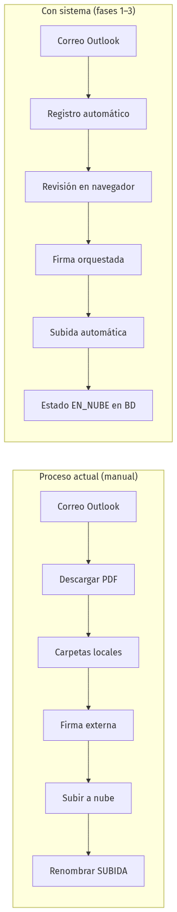
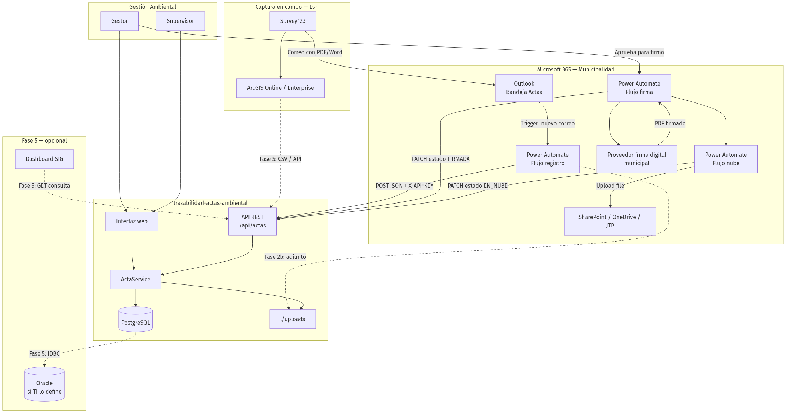
| Herramienta | Rol actual | Integración con el sistema | Mecanismo | Factibilidad |
|---|---|---|---|---|
| Survey123 | Captura en campo, envía correo | Origen SURVEY123; metadatos en registro |
Correo → Outlook → Power Automate → API | Alta |
| ArcGIS | Almacén espacial de casos | Cruce de referencia / importación | CSV export, Feature Service, REST | Media |
| Outlook | Recepción de actas | Disparador de automatización | Power Automate (When email arrives) | Alta |
| Power Automate | Automatización M365 | Registro, firma, subida nube | HTTP POST/PATCH + conectores M365 | Alta |
| SharePoint / JTP | Resguardo en nube | Destino de PDF firmado | Upload file + actualización de estado | Media–alta |
| Firma digital | Validez legal del documento | Orquestación del flujo | API del proveedor municipal | Media–alta |
| Oracle | BD corporativa (si aplica) | Persistencia centralizada | JDBC + dialecto Hibernate | Media–alta |
| Active Directory | Identidad municipal | Login y roles | Spring Security + LDAP | Alta |
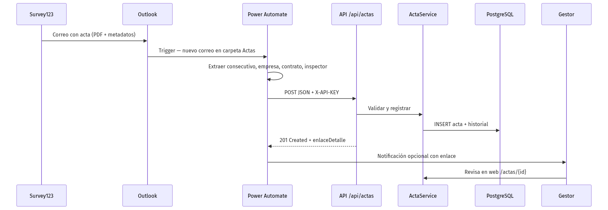
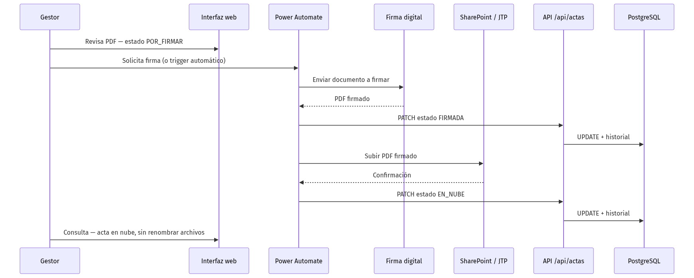
| Método | Ruta | Uso | Estado |
|---|---|---|---|
| POST | /api/actas |
Registrar acta desde Outlook / Power Automate | Implementado |
| GET | /api/actas |
Consulta con filtros | Documentado |
| GET | /api/actas/{consecutivo} |
Detalle por consecutivo | Documentado |
| PATCH | /api/actas/{consecutivo}/estado |
Actualizar estado (firma, nube) | Documentado |
Documentación detallada: docs/API-POWER-AUTOMATE.md
En la reunión con Tecnología, conviene validar:
| Documento | Contenido |
|---|---|
README.md |
Inicio rápido y visión general |
docs/PROPUESTA-ETAPA2-DISENO.md |
Propuesta completa Etapa 2 |
docs/API-POWER-AUTOMATE.md |
Contrato API y flujos Power Automate |
docs/DESPLIEGUE-AWS.md |
Despliegue demo en AWS |
Municipalidad de Heredia — Gestión Ambiental · Prototipo 0.1.0-DEMO